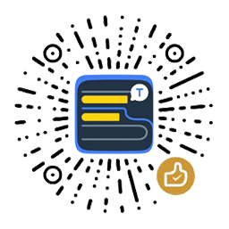

在专注与求知间，找到优雅的平衡点
传统的翻译工具要么全盘汉化，破坏语境；要么频繁打断，割裂思路。
Semi-Translator 为你带来第三种选择，一种更专注、更高效的选择。
建立你的专属词库
通过简洁的设置面板，轻松添加、管理你的生词列表。哪个单词翻译，你说了算。
开放的 AI 内核
支持 OpenAI 兼容及自定义 API 接口。你可以接入任何强大的大语言模型，获得联系上下文的、最精准的翻译。
精准高亮，行内释义
翻译只在你关心的生词处出现，释义以内联形式优雅呈现，目光无需离开原文，体验如丝般顺滑。

支持我们，为好想法充电
如果它帮助到了您，请不吝赞赏，请我吃个🍗吧~
